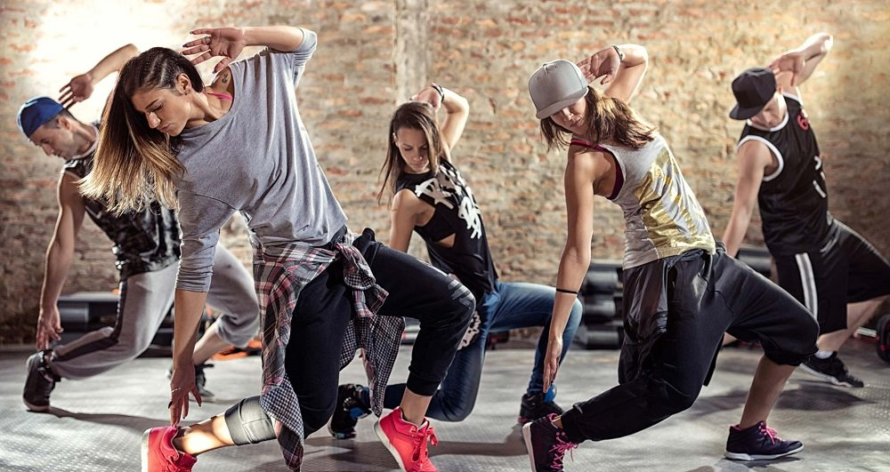
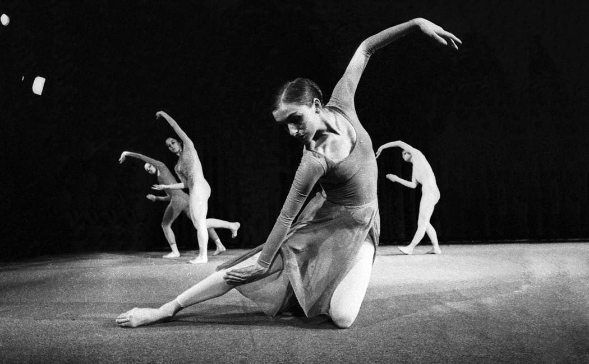

Школа Танцев
Для каждого человека танец — это что-то свое. Личное, хрупкое, проносимое в душе через года. Для одних — это ассоциации с юностью и детством. Для других — способ расслабиться в настоящем.
Кто-то сказал, что танец это жизнь, и он был прав. Вспомним известное изречение: движение — это жизнь. А танец как раз и есть движение. Чисто с научной точки зрения, в танце работают мышцы тела, а при быстром темпе ускоряется кровоток. Это не позволяет холестириновым бляшкам задерживаться в организме. Танцующие люди не знают что такое болезни сердечно-сосудистой системы, а слово «гиподинамия» они и вовсе никогда не слышали.
Для кого-то танец лекарство от депрессии. Это лекарство самое чистое, проверенно и надежное. Кто из нас не замечал, как быстро поднимает настроение бодрая музыка? Прилив адреналина, вдохновения, энергии. Танец дает возможность вырваться из серых будней, отлучиться от повседневности и окунуться в насыщенный мир звуков и ритма. Медленный танец снимает напряжение и помогает расслабиться, быстрый заряжает новой силой. Заглянуть в свою душу, поймать собственную гармонию и удержать ее — вот что может дать танец.
Хип хоп
Хип-Хоп – это танец, который объединяет множество танцевальных стилей и направлений XX века. В широком понимании, Хип-Хоп – это практически любой танец, который танцуют под соответствующую музыку. Именно поэтому, довольно сложно выделить определенное направление Hip-Hop, т.к. в нем соединено множество стилей, в связи с чем, чаще всего используется термин «танец в стиле хип-хоп».
Джаз-модерн
Джаз-модерн — это танец, удивительным образом сочетающий в себе элементы джазовой хореографии, стилистику направления модерн и технику классического танца. Это направление очень экспрессивно, позволяет при помощи движений выразить сложные эмоции. Джаз-модерн отличают динамичные и свободные движения корпуса, грациозные вращения и прыжки. Это танец энергии, жизни, постоянного движения.
Брейк данс
Брейк-данс сегодня считается одним из наиболее популярных молодежных танцев. Он включает в себя элементы акробатики, аэробики, силовых трюков и пластики.
Сегодня брейк-данс особенно популярен как способ самовыражения и стремления выделиться. Занимаются им в основном парни, так как танец требует серьезной физической силы. Однако девушки в нем тоже достигают высоких успехов.
Прайс
Индивидуальное занятие
- 300 грн / 1 занятие
- 2000 грн / 8 занятий
Занятие в группе
- 150 грн / 1 занятие
- 1000 грн / 8 занятий